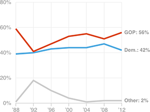

White, College-Educated Voters Historically Have Favored GOP Candidates
However, respondents in this group currently favor Hillary Clinton by 8.7 percentage points, according to an average of recent polls.
Share of the vote in presidential elections:
